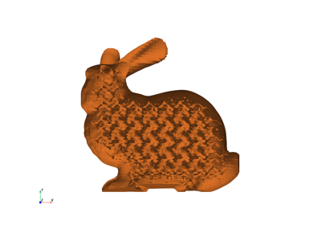

Examples
Each example is a standalone script: download it at the bottom of its page and
run it with python <name>.py. Most of them are run at each documentation
build and the 3D scenes can be rotated in the Interactive Scene tab. Examples
that need the optional CAD backend say so (pip install microgen[cad]).
Basic shapes
Elementary shapes (box, sphere, cylinder, capsule, ellipsoid, extruded polygon, polyhedra) used as building blocks of microstructures.
Triply periodic minimal surfaces (TPMS)
Sheet and skeletal TPMS, density and cell-size grading, morphing between TPMS families, cylindrical, spherical and swept coordinate frames, and infill of arbitrary meshes.

Infill graded by the distance to the surface
Spinodoids
Stochastic, bicontinuous and exactly periodic microstructures generated from Gaussian random fields.
Lattices
Preset and custom strut-based lattices, octet-truss with a periodic mesh, and honeycomb.
Implicit workflow
Phases defined by their implicit field, meshed by marching cubes without the optional CAD backend.
Particle and fibre RVEs
Periodic representative volume elements filled with random, non-overlapping inclusions, built as unions of implicit shapes.
3D operations
Repetition of a unit cell, rasterization of a phase, Voronoi tessellations and their intersection with a TPMS.

Meshing and remeshing
Periodic tetrahedral meshes with gmsh and remeshing with mmg. These examples
need the mmg executables (conda install -c conda-forge mmg); they are
not run at each documentation build.

Fibres
Short fibre composites rebuilt from a list of measured fibres.